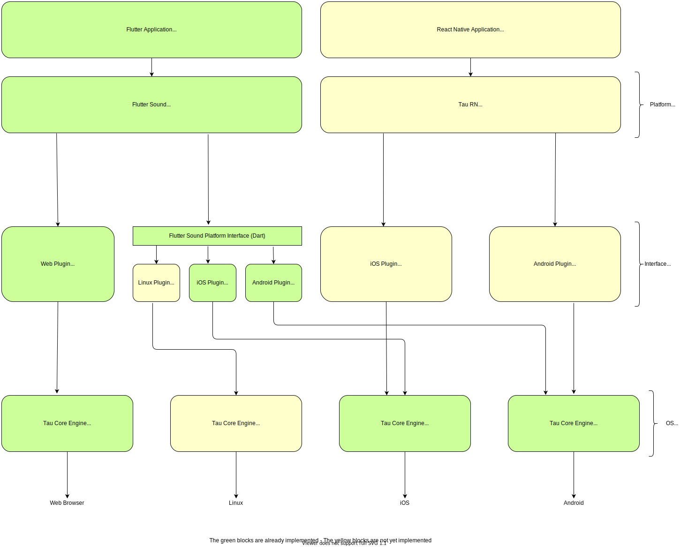

The τ architecture

On this diagram, we can see clearly the three layers :
The Platform layer
This is the highest layer. This layer must implement the various platforms/frameworks that τ wants to support.
Actually the only platform is Flutter. Maybe in the future we will have others :
- React Native
- Native Script
- Cordova
- Solar 2D
- ...
This layer is independant of the target OS. The API is general enough to accomodate various target OS.
The OS layer
This is the lowest layer. this layer must implement the various target OS that τ wants to support.
Actually the OS supported are :
- Android
- iOS
- Web
Maybe in the future we will have others :
- Linux
- Windows
- MacOS
This layer is independant of the platforms/frameworks that τ wants to support.
The Interface layer
The middle layer is the interface between the two other layers. This middle layer must be as thin as possible. Its purpose is just for doing an interface. No real processing mus be done in this layer
Where are published all those blocs ?
- Flutter Sound is published on
pub.devunder the projectflutter_sound(orflauto) - The Flutter Sound Platform Interface is published on
pub.devunder the projectflutter_sound_platform_interface(orflauto_platform_interface) - The Flutter Web plugin is published on
pub.devunder the projectflutter_sound_web(orflauto_web) - The τ Core for Android is published on
Bintray(jcenter()) under the projecttau_sound_core(ortau_core) - The τ Core for iOS is published on
Cocoapodsunder the projecttau_sound_core(ortau_core) - The τ Core for Web is published on
npmunder the projecttau_sound_core(ortau_core)